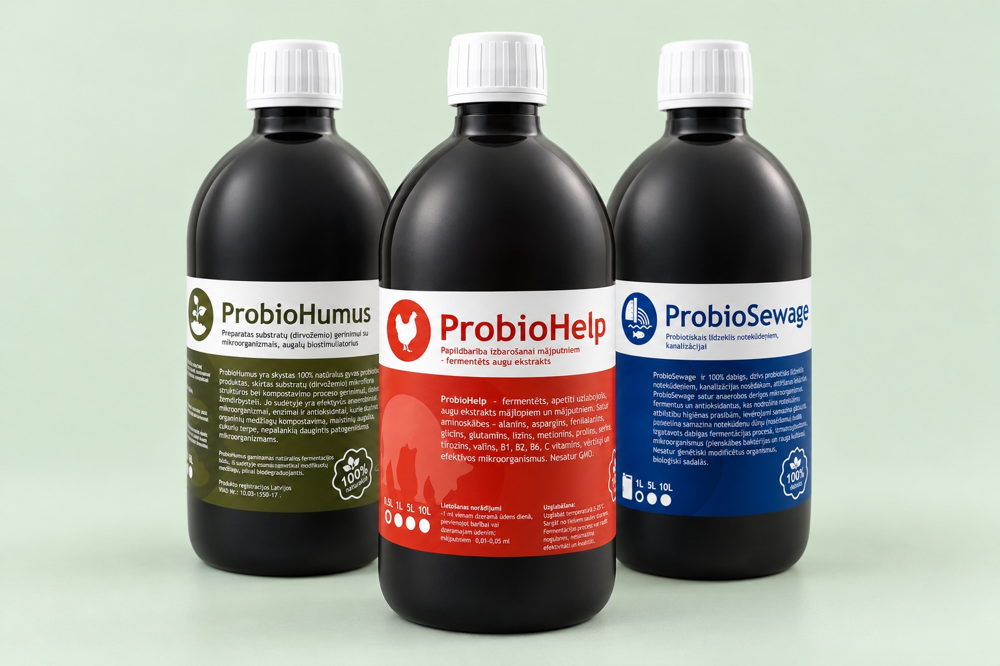
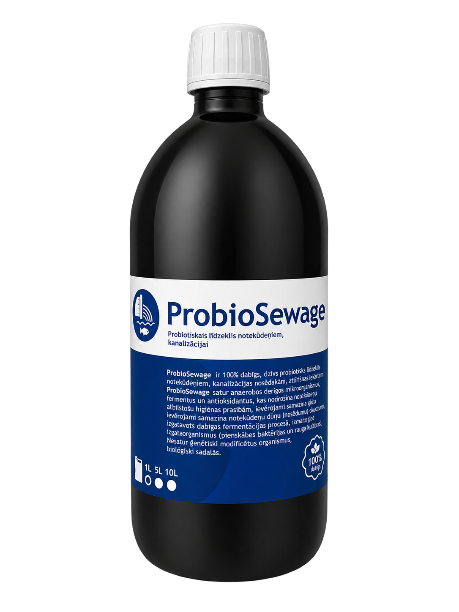

| BALTIC PROBIOTICS |
|
KELIOS IDĖJOS JUMS Gal šįkart
pravers? |
 |
Gal atsargų dar turite, o gal tiesiog neradote to, ko ieškojote? Šįkart parinkome tris kitus produktus skirtingiems jūsų poreikiams. |
|
SKIRTINGI POREIKIAI. AIŠKŪS PASIRINKIMAI. Kas jums aktualu? |
 | 01 / KOMPOSTAVIMUI ProbioHumusKompostuojate sodo atliekas? Padėkite kompostavimo procesui ir pasirūpinkite dirvožemio mikroflora. PERŽIŪRĖTI → |
|
 | 02 / NAMINIAMS PAUKŠČIAMS ProbioHelpAuginate naminius paukščius? Fermentuotas pašaro papildas jų kasdienei mitybai. PERŽIŪRĖTI → |
|
 | 03 / NUOTEKŲ SISTEMAI ProbioSewagePrižiūrite nuotekų sistemą? Priemonė organinėms atliekoms skaidyti ir nemaloniems kvapams mažinti. PERŽIŪRĖTI → |
|
|
| JŪSŲ KITAM PASIRINKIMUI | | 10 % nuolaida | | kitam jūsų užsakymui | |
Kodą įveskite pirkinių krepšelyje. |
|
Vis dar dvejojate?Parašykite, kuo norite pasirūpinti. Padėsime susigaudyti tarp produktų ir pasirinkti pagal jūsų poreikį. Iki pasimatymo,
„Baltic Probiotics“ komanda |
|
| probiotikai.com |
| Facebook · Kontaktai · +370 670 07075 |
Gavote šį laišką, nes užsiprenumeravote mūsų naujienas.
SIA Baltic Probiotics · Ceptuve, Rucavas pagasts,
Dienvidkurzemes novads, LV-3477
Privatumo politika · Atsisakyti naujienlaiškių |